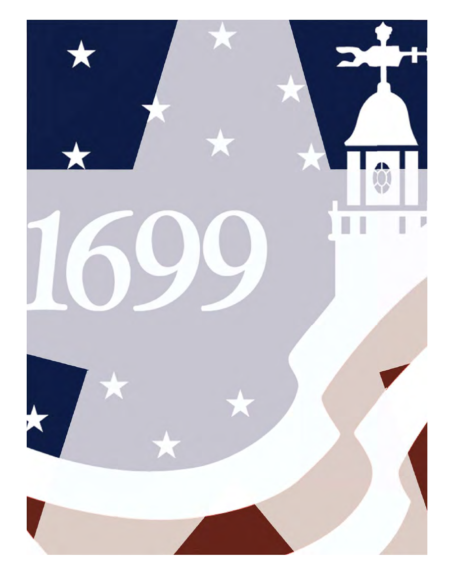
Goals
2011 and 2012 Biennium
Adopted November 10, 2010
for the
and
Outcomes
The City of
Williamsburg, Virginia
Initiatives
Final Cover.indd 1
3/17/2011 11:42:35 AM

Clyde Haulman
Mayor
Paul Freiling
Vice Mayor
Judith Knudson
Council Member
Scott Foster
Council Member
Douglas Pons
Council Member
CITY OF WILLIAMSBURG VISION
Williamsburg will become an evermore safe, beautiful, livable city
of historic and academic renown, served by a city government—
cohesively led, financially strong, always improving—in full partnership
with the people who live, work and visit here.
To advance the city’s vision, every two years the Williamsburg City Council
identifies new strategic objectives for city government. Biennial Goals,
Initiatives and Outcomes (GIOs) provide an expression of city priorities, as
specific and measurable as possible, covering a two year period. Longer term
objectives are expressed in terms of what the city hopes to accomplish in the
next two years toward that objective.
GIOs are not intended to be a comprehensive list of all city services and
activities. Instead, they provide a concrete, coordinated expression of City
Council's direction for change and focus in the near future. In that way, they
drive city government operating budget and capital budget formation. The
20011/2012 Biennial Goals, Initiatives and Outcomes, adopted in November
2010, guide budget decisions for two fiscal years, that is for FY 12 and FY
13.
Under ten Goal statements 78 specific Initiatives are identified. In addition to
the Initiatives, Outcomes from the National Citizen Survey (NCS), and
“Desired Outcomes” and Observed Results,” provide performance metrics
which help assess goal achievement. Williamsburg participated in the NCS in
May 2008 and 2010. Reported here are citizen ratings of “Good” or
“Excellent” for 69 questions and whether those ratings were “above,”
“below,” or “similar” to the benchmark average of hundreds of other cities
and counties across the nation (cross referenced to the page in Williamsburg’s
NCS Report).
The Biennial GIOs are created in light of a variety of resources including the
city's Comprehensive Plan, Five Year Capital Improvement Program (CIP),
and Economic Development Strategic Plan; and with input from citizens, city
staff, and volunteers. Biennial goal statements directly align with the 2006
Comprehensive Plan goals. Initiative statements with a
symbol directly
link to projects in the city’s CIP.
Public engagement is vital to the success of this process and is always
welcomed. Go to www.williamsburgva.gov/goals for information and a link
to our online Open Forum.
Clyde Haulman, Mayor
Jackson C. Tuttle, City Manger
B-2

I. Community Engagement
A. Comprehensive Plan Update and
Interjurisdictional Coordination
B. Citizen Communications Strategic Plan
C. City/College (Town/Gown) Relations
D. Stryker Center – City/Library Partnership
E. Communications Franchises
F. Voter Rights Pre-Clearance
G. City Council Meeting Time of Day
II. Character of the City
A. Vision for Monticello/Lafayette/Richmond
Road Area
B. Vision for Northeast Triangle of City
C. Future Community in Southeast Quadrant
D. Targeted Redevelopment Opportunities
E. Corridor Beautification
F. Open Space Preservation
G. Historic Building Survey
III. Economic Vitality
A. Economic Development Strategic Plan Update
B. EDA Programs
C. Economic Diversification Strategies
D. Tourism Marketing
E. Business Assistance and Recruitment
F. Business Recycling
G. New Retail Guide Deployment
H. Arts and Creative Economy District
I. Downtown Vibrancy
IV. Neighborhoods and Housing
A. Neighborhood Relations and Preservation
near College
B. Merrimac Trail Neighborhoods
C. Blayton Elderly Housing Expansion
D. Incentives for Workforce Housing
E. Residential Electrical Reliability
F. City/Housing Authority Partnership
V. Transportation
A. Ironbound Road Widening
B. Quarterpath at Williamsburg Improvements
C. Traffic Safety Enhancements
D. Pedestrian Connection Improvements
E. Bike Friendly Community Designation
F. Passenger Rail Enhancement
G. Williamsburg Area Transport
H. Vision for Transportation Center Expansion
VI. Public Safety
A. Storm Ready Community Re-Designation
B. Quarterpath Emergency Shelter Operations
C. Merrimac Trail Neighborhoods Community
Policing
D. Public Safety Physical Fitness
E. Police Emergency Medical Response
F. Fire Equipment Replacement
G. Fire Station Renovations
H. Emergency Operations Center
VII. Education and Human Services
A. School Contract Renewal
B. Youth Achievement
C. Workforce Development
D. Homelessness Prevention and Intervention
E. Senior Support Services
VIII. Recreation and Culture
A. Save Country Road West
B. Civil War Sesquicentennial
C. Waller Mill Park
D. Kiwanis Park
E. Quarterpath Park and Recreation Center
F. Neighborhood Parks
G. Friends of the Parks
H. Festivals and Sports Marketing Opportunities
I. City Historic Items Curation
J. Poet Laureate Designation
K. National Recreation and Parks Accreditation
L. Williamsburg Visual Arts Center
IX. Environmental Sustainability
A. Stormwater Management and Treatment
B. VML Platinum Certification
C. Green Challenges and Programs
D. Water Conservation Promotion
E. Drinking Water Safety
F. Southeast Water Tank
G. Sewer System Overflow Prevention
H. Voluntary Residential Refuse Collection
I. Municipal Building LEED Certification
J. Green Technology and Architectural Standards
K.Cypress Creek Power Plant
X. City Organizational Leadership
A. Budget Reset - The New Normal
B. Leadership Philosophy of Full Engagement
C. Performance Measurement System Development
D. Geographic Information System Advances
E. Employee Wellness and Medical Cost
Containment
B-3

GOAL I INITIATIVES
A. Comprehensive Plan Update and Interjurisdictional Coordination
Begin the 2012 Williamsburg Comprehensive Plan update process by October 2011. Coordinate
the plan update with James City County and York County, for substantial completion by December
2012. Strive to offer a common plan format and a joint public participation process, coordinated
by the Regional Issues Committee.
B. Citizen Communications Strategic Plan
Develop and implement a Communications Strategic Plan by
June 2011, which expands access to public information,
reinforces transparency of city operations and services, and
encourages citizen involvement in governance.
Increase citizens’ use of city’s e-notification system to 500
participants.
C. City/College (Town/Gown) Relations
Support the work of the Neighborhood Relations Committee
which brings together representatives of the College, City,
students, landlords, neighborhood residents to strengthen and
sustain improved community relations.
Join the International Town & Gown Association (ITGA)
with the College of William and Mary to guide and encourage
new town/gown initiatives.
D. Stryker Center – City/Library Partnership
Explore and advance the concept of a partnership between the
City and the Williamsburg Regional Library to replace the
existing Stryker Building to meet the city’s governmental
needs, and to satisfy unmet demands for civic and community
activity space and expanded access to digital and cultural
services of the Library. This is the next step in development
of the “City Square” municipal center.
The Center could include such features as a City Council
chamber and conference room, voter registration, permanent
and changing exhibit/gallery, and reception space – all shared with Library uses, such as,
educational and arts programming, video production and origination, film screening, and diverse
community meeting and activities…A place where citizens interact easily with government and one
another.
GOAL I
ENGAGE THE PEOPLE WHO LIVE, WORK AND VISIT HERE IN A FULLER
COMMUNITY PARTNERSHIP– COMMUNICATING, PLANNING, IMPLEMENTING,
GOVERNING – TO FULFILL WILLIAMSBURG’S VISION FOR THE FUTURE.
B-4
E. Communications Franchises
Negotiate a renewal of the telecommunication’s franchises with Verizon and Cox Communications
during the biennium.
F. Voter Rights Pre-Clearance
Submit an application to the U.S. Department of Justice and petition the Federal District Court to
allow Williamsburg to be exempted from the preclearance process for changing voting and polling
locations.
G. City Council Meeting Time of Day
Move City Council Work Sessions from 4:00 p.m. to 7:00 p.m. on Mondays for a six month trial.
Evaluate in April 2011.
B-5

GOAL I OUTCOMES
KEY OUTCOME MEASURES
Desired Outcomes
Observed Results
Increase the number of website visits by 5% each
year.
Website Visits: Change:
FY 09 – 237,969 -
FY 10 – 257,394 8.2%
*Source: Williamsburg IT Office
Increase the number of online transactions by 5%
each year.
Online transactions: Change:
FY 06 – 2,829 -
FY 07 – 3,369 19.1%
FY 08 – 4,061 20.5%
FY 09 – 4,288 5.6%
FY 10 – 4,996 16.5%
*Source: Williamsburg IT Office
Increase the number of citizens signed up for “E-
notify.”
Citizens signed up: Change:
FY 08 – 756 -
FY 09 – 1,686 123.0%
FY 10 – 1,517 - 10.0%
*Source: Williamsburg IT Office
Increase the number of press releases sent out and
picked up by media.
Releases Sent Releases Picked Up
FY 10 – 63 FY 10 – 109
*Source: Communications Specialist
Increase the use social media as a tool for public
information dissemination.
Facebook Fans: Twitter Followers:
YTD – 1,185 YTD – 239
*Source: Communications Specialist
Use attendance at City Council meetings to monitor
community engagement.
Work Sessions Meetings
*Source: Clerk of Council
Use participation in Neighborhood Council of
Williamsburg to monitor community engagement.
*Source: NCW
B-6

Citizen Ratings of Goal I Outcomes
from 2008 and 2010
NATIONAL CITIZEN SURVEY
Percent Rated Compared to
“Good”
National
or “Excellent”
Benchmark
2008 2010
Measure
Opportunities to participate in community 69% 71%
much above
matters (p.40)
Opportunities to volunteer (p.40)
80% 86% much above
Public information services (p.43)
76% 80%
much above
B-7
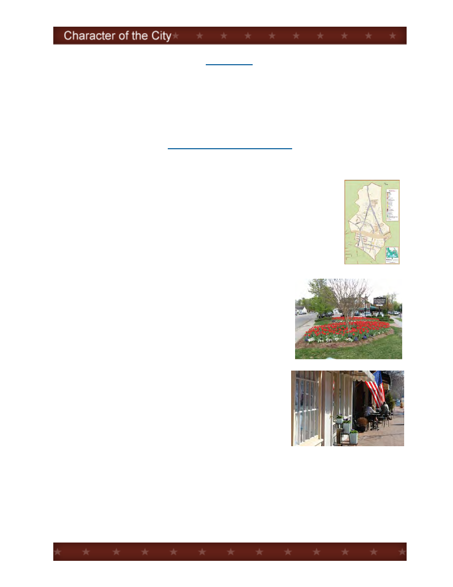
GOAL II INITIATIVES
A. Vision for Monticello/Lafayette/Richmond Road Area
Create a vision plan for the area centered around Williamsburg and Monticello
shopping centers, addressing future retail and residential improvements. This
should be part of the 2012 Williamsburg Comprehensive Plan update, and
coordinated with the arts district concept (see Goal III, arts district item).
B. Vision for Northeast Triangle of City
Appoint a focus group with representatives from city boards and commissions,
citizens, business owners and city staff to develop a vision for the northeast
“triangle” of the City (Capitol Landing Road - Merrimac Trail - Second
Street), to be used as input for the 2012 Comprehensive Plan update. The
focus group needs to complete work by fall 2011.
C. Future Community in Southeast Quadrant
Work with Riverside Healthcare Association to plan and
facilitate building high quality, sustainable new city
neighborhoods and commercial areas between Quarterpath
Road and Route 60 east, with Doctors Hospital of
Williamsburg as an anchor. Coordinate development processes
with James City County for a seamless new community of
regional significance and in keeping with Williamsburg’s
unique character.
D. Targeted Redevelopment Opportunities
Identify and prioritize redevelopment opportunities for
individual underutilized properties, and work with the owners
to facilitate new or adaptive reuse projects.
Evaluate regulations and guidelines to determine if revisions
would encourage redevelopment in targeted areas of the city.
F. Corridor Beautification
Collaborate with James City and York Counties on efforts led by the Greater Williamsburg
Chamber and Tourism Alliance to enhance the Route 60 east corridor from Busch Gardens into the
city.
GOAL II
PROTECT AND ENHANCE WILLIAMSBURG’S UNIQUE CHARACTER AS DEFINED
BY ITS ICONIC PLACES—THE COLONIAL WILLIAMSBURG HISTORIC AREA AND
CAMPUS OF THE COLLEGE OF WILLIAM AND MARY—AND AS REINFORCED BY
THE NATURAL AND MANMADE ENVIRONMENT OF ITS BEST ENTRANCE
CORRIDORS, OPEN SPACES, AND PEOPLE PLACES.
B-8
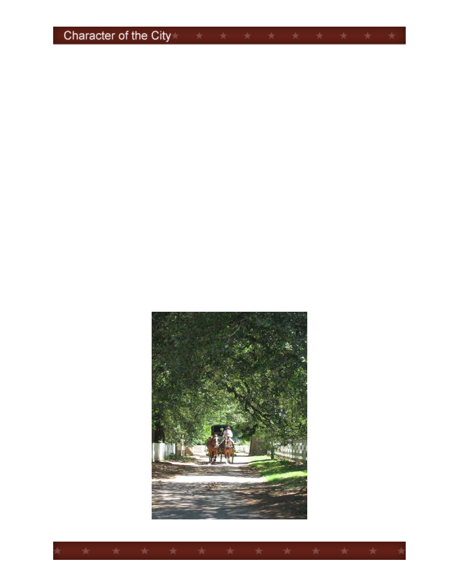
F. Corridor Beautification (continued)
Improve the pedestrian environment on Richmond Road and Scotland/Prince George Streets from
the Deli area to Boundary Street in conjunction with redevelopment projects (Tribe Square, Mama
Mias, and Hermes next to Paul’s Deli).
Initiate the underground utility wires project on Page Street in fiscal 2012.
Work with CSX to remove litter from CSX right-of-way within the city and the Historic Triangle.
Demolish old fire station building on Ironbound Road and land bank site for a future second fire
station.
Replace existing raised median in 2011 at College Corner with granite curb median to better
withstand heavy trucks.
L. Open Space Preservation
Actively pursue acquisition of open space and land conservation, either through purchase of
ownership or development rights, both in the City and in Waller Mill Reservoir watershed,
whenever availability, price and budget capacity align.
Implement the new Heritage Tree Program with periodic progress reports on the success of the
program during the biennium.
M. Historic Building Survey
Update the City’s design review guidelines using information gathered from the historic building
survey, by 2012.
B-9

GOAL II OUTCOMES
KEY OUTCOME MEASURES
Desired Outcomes
Observed Results
Open space preserved as the largest single land use
category in the City.
In FY 10, there are 2,275 acres (39.5% of
total City land area) reserved as open
space either as public parks and parkways,
College Woods, CWF golf courses or
sensitive environmental no-build areas.
*Source: City Planning Department
Overhead power lines replaced with underground
lines throughout the City, especially on entrance
corridors, at an average rate exceeding 1,000 feet per
year since 1980.
Since 1982, 32,250 (6.1 miles) have been
placed underground by City action (an
average 1,240 feet per year). No additional
underground wiring has been placed since
FY 08.
*Source: City Public Works & Utilities Dept.
The visual and historic character of the City
protected through an active and effective
architectural review program.
48% of City land is subject to the
Architectural Review Board. ARB total
cases and percent approval:
Cases % Approved
FY 06 – 169 98%
FY 07 – 161 84%
FY 08 – 150 83%
FY 09 – 168 82%
FY 10 – 155 84%
*Source: City Planning Department
Redevelopment, infill, or new development projects
continue to refresh the City as indicated by building
permits valued at least $50 million annually issued.
Building permits issued and total value:
FY 06 – 252 permits, $56.4 mil
FY 07 – 291 permits, $43.7 mil
FY 08 – 268 permits, $55.4 mil
FY 09 – 200 permits, $27.0 mil
FY 10 – 199 permits, $22.7 mil
*Source: City Codes Compliance Division
B-10
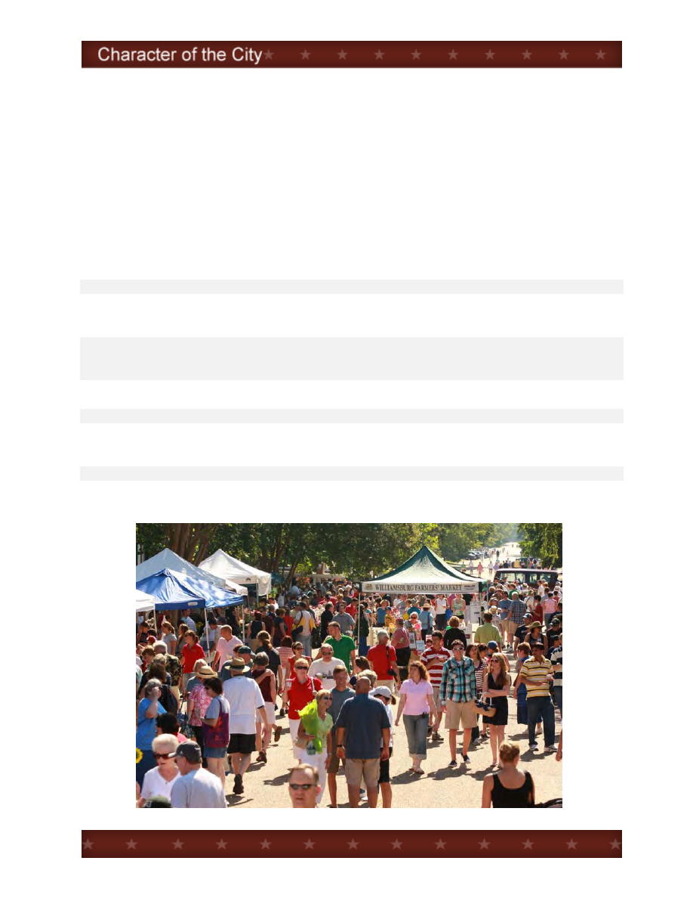
Citizen Ratings of Goal II Outcomes
from 2008 and 2010
NATIONAL CITIZEN SURVEY
Percent Rated Compared to
“Good”
National
or “Excellent”
Benchmark
2008 2010
Measure
Overall Quality of Life in Williamsburg (p.7) 78%
87%
much above
Williamsburg as a place to live (p.7)
85%
88%
much above
Overall quality of new development in
56%
60%
similar
Williamsburg (p.16)
Overall appearance of Williamsburg (p.16)
88%
91%
much above
Cleanliness of Williamsburg (p.28)
91%
92%
much above
Quality of overall natural environment (p.28) 76%
84%
much above
Preservation of natural areas (p.28)
58%
60%
above
B-11

GOAL III INITIATIVES
A. Economic Development Strategic Plan Update
Update the Economic Development Strategic Plan for the five
year period 2011-2016, including input from the Historic
Triangle Collaborative Economic Diversity Report, and
incorporate its recommendations into the 2012 Comprehensive
Plan.
B. EDA Programs
Implement new or revise existing EDA programs, as needed, to
encourage and facilitate redevelopment. These programs may
include a façade improvement program, rehabilitation loan
program, deal closing fund, and change-of-use loan program.
C. Economic Diversification Strategies
Analyze the City’s role in a regional business incubator.
Work with Riverside Healthcare Association to recruit compatible and regional professional service
businesses to Class A office space at “Quarterpath at Williamsburg,” offering a “hub” location for
eastern Virginia – Richmond to Hampton Roads.
D. Tourism Marketing
Invest wisely in tourism promotion in fiscal years 2012 and 2013 through the Colonial
Williamsburg Foundation, the Greater Williamsburg Chamber and Tourism Alliance, and the
Williamsburg Area Destination Marketing Committee, to increase visitation to Williamsburg.
Support the designation of the Historic Triangle as a “World Heritage” site.
Engage with William and Mary’s Tourism Task Force to
attract and serve William and Mary related visitors to
increase overnight stays and spending in the city.
Promote arts, sports and other special events related
tourism (see Goal VIII).
Prepare for and host the 2012 Virginia Municipal League
Conference.
Prepare for and host the 2011 Business Expansion and Retention International Conference.
GOAL III
INCREASE EMPLOYMENT OPPORTUNITIES, INCOME, BUSINESS SUCCESS,
AND CITY REVENUES BY SUPPORTING AND PROMOTING THE CITY’S
HERITAGE TOURISM AND EDUCATION BASE AND OTHER DEVELOPMENT
AND REDEVELOPMENT OPPORTUNITIES.
B-12

E. Business Assistance and Recruitment
Design and implement a business ambassador program where members of
the City Council and Economic Development Authority visit new and
existing city businesses.
F. Business Recycling
Encourage business recycling through implementing the business
sustainability challenge and award program developed by the City’s Green
Team by November 2010. Evaluate standards that regulate outside recycling
containers.
G. New Retail Guide Deployment
Analyze the economic impact of the Williamsburg Retail and Dining Map at
the end of 2011, and determine the return on investment for future printings.
H. Arts and Creative Economy District
Move to the implementation phase of the arts
district report as directed by City Council in May
2010, and coordinate this with the 2012
Williamsburg Comprehensive Plan Update and with
the plans for the Vision of the Monticello
Avenue/Richmond Road Area (see Goal II, first
item). Implementation potentially includes adoption
of an arts district ordinance that offers incentives
and programs, identification of a viable cornerstone
project in the district, and the design and launching
of a marketing program to attract the “creative
economy” to the arts district.
I. Downtown Vibrancy
Develop a coherent vision for a vibrant downtown to include increased commercial and residential
uses that will result in more downtown activity (i.e. people living, working, visiting and shopping).
B-13

GOAL III OUTCOMES
KEY OUTCOME MEASURES
Desired Outcomes
Observed Results
The City advanced as an exceptional tourism
destination by supporting the Hospitality Industry’s
goal of 900,000 hotel room nights sold each year.
Room nights sold in the city:
FY 06 – 797,832
FY 07 – 836,360
FY 08 – 812,887
FY 09 – 673,735
FY 10 – 638,880
*Source: City Finance Department
Increase Colonial Williamsburg Foundation’s ticket
sales and “visitor gate count.”
Ticket Sales: Visitor Gate Count:
2008 – 707,000 2008 – 2 mil
2009 – 660,000 2009 – 1.7 mil
*Source: Colonial Williamsburg Foundation
Increase meal tax receipts by 2% annually.
Meal Tax receipts: Change:
FY 07 - $5.9 mil 4.5%
FY 08 - $6.0 mil 2.6%
FY 09 - $5.5 mil -8.0%
FY 10 - $5.6 mil 1.5%
*Source: City Monthly Financial Statement
Increase total number of city businesses and start-up
businesses in the city.
Total: Start-up:
FY 08 – 779 32
FY 09 – 783 20
FY 10 – 783 41
*Source: City monthly operating reports
The City’s position as a retail center of the region
maintained with per capita retail sales growing
annually.
Per capita retail sales in the city:
FY 06 – $23,070
FY 07 – $27,953
FY 08 – $31,534
FY 09 – $27,215
FY 10 – $24,082
*
Source: Virginia Department of Taxation
A balanced tax base sustained by growing the
percent of the taxable land book consisting of
commercial property.
The percent of taxable City commercial
property on the City’s Land Book:
FY 06 – 34.8%
FY 07 – 34.0%
FY 08 – 37.0%
FY 09 – 35.7%
FY 10 – 36.7%
FY 11 – 36.4%
*Source: City Assessor
B-14
Desired Outcomes
Observed Results
Economic opportunity for the citizens enhanced with
per capita personal income growing annually.
Per capita personal income in the city:
2004 – $41,731
2005 – $42,713
2006 – $45,778
2007 – $48,135
2008 – $49,520
*Source: US Department of Commerce, Bureau of
Economic Analysis (Wmsbg, JCC combined)
The City’s position as a regional employment center
maintained by growing the total number of in-city
jobs across all industries.
The number of jobs based in the city:
FY 05 – 17,043
FY 06 – 16,865
FY 07 – 16,180
FY 08 – 15,269
FY 09 – 14,337
*Source: Virginia Employment Commission
B-15

Citizen Ratings of Goal III Outcomes
from 2008 and 2010
NATIONAL CITIZEN SURVEY
Percent Rated Compared to
“Good”
National
or “Excellent”
Benchmark
2008 2010
Measure
Employment opportunities (p.19) 40% 35%
similar
Shopping opportunities (p.19)
76% 77%
much above
Williamsburg as a place to work (p.19)
53% 60%
much above
Overall quality of business and service
65% 71% much above
establishments in Williamsburg (p.19)
Economic development services (p.18)
48% 49%
above
B-16

GOAL IV INITIATIVES
A. Neighborhood Relations and Preservation near College
Continue the work of the new Neighborhood Relations
Committee during the biennium to improve the quality
of life in the neighborhoods surrounding William and
Mary by building and maintaining effective working
relationships between the city, college, students,
neighbors and landlords.
B. Merrimac Trail Neighborhoods
Focus city staff attention (Human Services, Codes
Compliance, Police, Recreation, etc.) on neighborhood
stability and social conditions in the Merrimac Trail
apartment corridor, collaborating with residents and
property owners.
C. Blayton Elderly Housing Expansion
Complete the planning and funding process for expanded
elderly and disabled housing on Blayton Building
property, with Williamsburg Redevelopment and
Housing Authority, and obtain project approvals by the
end of the biennium.
D. Incentives for Workforce Housing
Determine, as a part of the 2012 Comprehensive Plan
update, the use of zoning incentives to increase the supply
of new workforce housing in Williamsburg, particularly
in the areas of prospective development such as the
southeast quadrant of the City.
E. Residential Electrical Reliability
Obtain remaining easements for the Indian Springs Road
electrical reliability project where Dominion is willing to
improve electric service reliability by placing overhead
wires underground.
F. City/Housing Authority Partnership
Increase partnership between the city and Williamsburg Housing Authority (WRHA) coinciding
with the co-location of WRHA administrative offices in the expanded Municipal Building for better
project coordination and operational cost savings.
GOAL IV
PROTECT AND ENHANCE THE QUALITY OF THE CITY’S RESIDENTIAL
NEIGHBORHOODS, AND ENCOURAGE THE PROVISION OF AFFORDABLE
HOUSING FOR CITY RESIDENTS AND WORKERS.
B-17
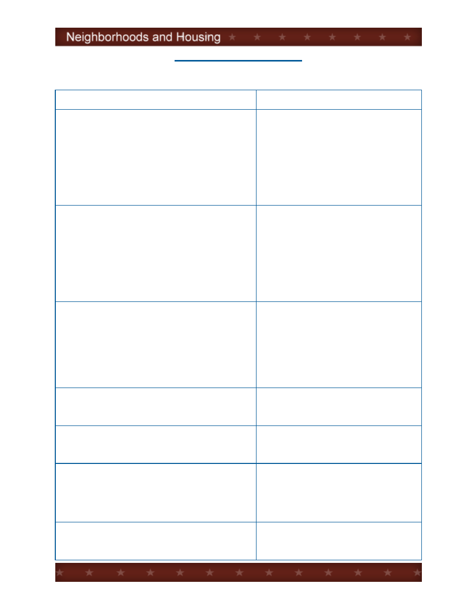
GOAL IV OUTCOMES
KEY OUTCOME MEASURES
Desired Outcomes
Observed Results
Housing stock and neighborhood quality preserved
by an active property maintenance enforcement
program with a 98% compliance rate.
Number of property maintenance
inspections and percent of closed cases
brought into compliance:
FY 06 – 752 inspections, 100%
FY 07 – 1,163 inspections, 100%
FY 08 – 1,328 inspections, 100%
FY 09 – 1,284 inspections, 100%
FY 10 – 2,224 inspections, 100%
*Source: City Codes Compliance Division
95% of rental inspection program cases brought into
voluntary compliance without resorting to court
action.
Number of cases closed and brought into
voluntary compliance without resorting to
court action.
FY 06 – 38 cases, 84% compliance
FY 07 – 38 cases, 97% compliance
FY 08 – 146 cases, 100% compliance
FY 09 – 147 cases, 99% compliance
FY 10 – 48 cases, 92% compliance
*Source: City Codes Compliance Division
Increase overall residential assessed values by 2%
each year.
Residential values and changes from prior
year:
FY 07 – $1,020,862,000 16.90%
FY 08 – $1,135,685,300 11.30%
FY 09 – $1,189,627,800 4.80%
FY 10 – $1,198,319,800 .73%
FY 11 – $1,162,741,200 - 3.00%
*Source: City Monthly Operating Reports
Maintain 50% of housing units in the city at less than
$250,000 to encourage affordability.
In FY 10, 52% of City’s 3,000 residential
parcels were valued at less than $250,000.
*Source: Assessor
Maintain current percentage of William and Mary
students living in university housing.
In 2010, 74% of W&M students are
housed on campus.
*Source: Peterson’s College Search
Decrease to three the number of single family zoned
neighborhoods with 50% or more rentals.
In FY 10, six of City’s 31 single family
neighborhoods were 50% or more rental
(Capital Heights 58%, S. England Area
77%, Matoaka Ct. 69%, Pinecrest 56%,
W. Williamsburg 71%, W. Williamsburg
Heights 54%)
Increase the number of trained and functioning
Neighborhood Response Teams in the City’s 8 CERT
Sectors.
CERT Trained:
FY 10 – 65
*Source: Human Services
B-18

Citizen Ratings of Goal IV Outcomes
from 2008 and 2010
NATIONAL CITIZEN SURVEY
Percent Rated Compared to
“Good”
National
or “Excellent”
Benchmark
2008 2010
Measure
Quality of your neighborhood as a place
78% 81%
above
to live (p.7)
Sense of community (p.37)
64% 66%
above
Openness and acceptance of the
51% 55% below
community towards people of diverse
backgrounds (p.37)
Availability of affordable quality
20% 30%
much below
housing (p.14)
Variety of housing options (p.14)
36% 42% much below
B-19
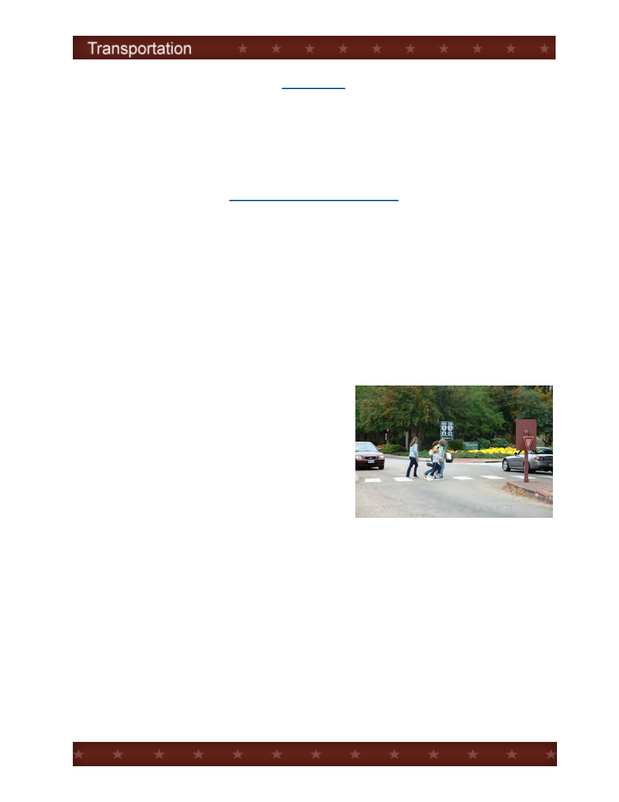
1
GOAL V INITIATIVES
A. Ironbound Road Widening
Advance during the biennium the widening and improvement, including underground wiring, of
Ironbound Road from Richmond Road to the Longhill Connector, as the City’s next major road
widening project scheduled for construction in 2016. Cooperate with VDOT and James City
County in the widening of Ironbound Road from the Eastern State Hospital entrance to Monticello
Avenue, also to include underground wiring adjoining the property of city residents, for completion
in the biennium.
B. Quarterpath at Williamsburg Improvements
Work with Riverside Healthcare to advance the completion of Battery Boulevard between
Quarterpath Road and Route 60 East with the Development Plan for Battery Boulevard approved
by Planning Commission in fiscal 2011.
C. Traffic Safety Enhancements
Install traffic signals at Richmond Road/Waltz Farm
Drive, York Street/Quarterpath Road, and Second
Street/Parkway Drive, if and when traffic signal
“warrants” (VDOT criteria) are satisfied.
Work with neighborhoods to install traffic calming
measures on residential streets.
D. Pedestrian Connection Improvements
Construct sidewalks and other enhancements with particular emphasis on filling in gaps.
Construct five sidewalk projects in the current Capital Improvement Plan (Richmond Rd.,
Rte. 199, S Boundary St., S. Henry St., and Nassau St.) before the end of 2011 using
Revenue Sharing money.
Work with the College of William and Mary to coordinate the installation in 2011 of
enhanced crosswalks at Ukrops Way using in-roadway-lighting (IRWL) system.
By the end of the biennium, fill in the remaining sidewalk gaps on two major streets:
Ironbound Road between Middle Street and Longhill Road (old Fire Station property), and
Richmond Road between Patriot Lane and Waltz Farm Drive (this also requires road, curb
and gutter and storm drainage improvements).
Develop a concept plan for a pedestrian crossing of the CSX railroad near Quarterpath
Road.
GOAL V
PROVIDE AN EFFECTIVE TRANSPORTATION SYSTEM WHICH IS
COMPATIBLE WITH THE FUTURE LAND USE PLAN, SERVES
PEDESTRIANS, BICYCLISTS AND MOTORISTS, AND PROMOTES
THE EXPANDED USE OF TRANSIT AND RAIL.
B-20

2
E. Bike Friendly Community Designation
Apply for certification as a Bike Friendly Community
from the League of American Bicyclists in 2011, and
consider the following improvements:
Install bicycle racks in key locations, such as:
public buildings, Prince George Parking Garage
and Parking Terrace, Prince George Street.
Install additional signs, as needed, on City streets
designated as “shared use.”
Encourage bicycle parking in site plan review.
F. Passenger Rail Enhancement
Support the work of the State (Department of Rail and
Public Transportation), Virginians for High Speed Rail,
Amtrak, CSX Railroad, and others to add at least one
additional train per day both ways, and to improve on-
time reliability to over 75%, by the end of the biennium.
G. Williamsburg Area Transport
Work with Williamsburg Area Transit Authority, James
City County and College to continue the Williamsburg
Trolley Service after the grant funding expires in 2013,
and enhance the service if funding allows.
Support WAT’s efforts to implement a weekly/monthly
pass program for transit riders.
H. Vision for Transportation Center Expansion
Prepare a concept plan demonstrating how the
Transportation Center complex can be expanded north of
the tracks on presently vacant property to provide parking
and access for more intercity rail service (Amtrak) and
perhaps even future light rail service.
B-21
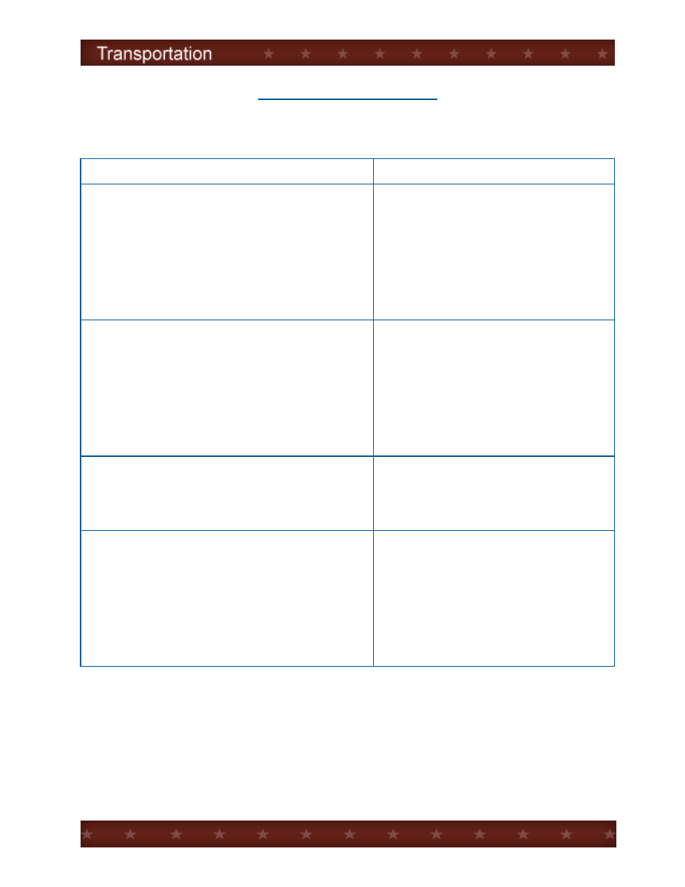
3
GOAL V OUTCOMES
KEY OUTCOME MEASURES
Desired Outcomes
Observed Results
Ridership of Williamsburg Area Transport
steadily increasing.
Ridership
FY 06 – 610,360
FY 07 – 670,939
FY 08 – 770,405
FY 09 – 865,552
FY 10 – 975,161(includes Trolley
service)
*Source: Williamsburg Area Transport
Ridership on Amtrak passenger rail from the
Williamsburg station steadily increasing.
Total ridership for Amtrak from the
Williamsburg station
FY 05 – 37,450
FY 06 – 37,957
FY 07 – 41,941
FY 08 – 49,685
FY 09 – 48,688
*Source: Amtrak
Expand the City’s portion of the Regional
Bikeway Plan accomplished, which calls for 27.6
miles bike lanes, bike paths, and other facilities.
In 2010 there are 14.9 miles of bike
paths, and other facilities in the city
(54% of the desired total).
*Source: City Planning Department
Safety on public streets improved by reducing
the number of accidents with injuries from year
to year.
Accidents with injuries within city
limits
FY 06 – 56
FY 07 – 68
FY 08 – 72
FY 09 – 55
FY 10 – 67
*Source: Williamsburg Police Department
B-22
4
Citizen Ratings of Goal V Outcomes
from 2008 and 2010
NATIONAL CITIZEN SURVEY
Percent Rated Compared to
“Good”
National
or “Excellent”
Benchmark
2008 2010
Measure
Ease of car travel in Williamsburg (p.9)
68%
71%
much above
Ease of bus travel in Williamsburg (p.9)
43%
57%
much above
Ease of bicycle travel in Williamsburg (p.9) 52%
58%
much above
Ease of walking in Williamsburg (p.9)
67%
73%
much above
Traffic flow on major streets (p.9)
53%
54%
much above
Street repair (p.11)
61%
64%
much above
Street cleaning (p.11)
75%
74%
much above
Street lighting (p.11)
67%
68%
much above
Snow removal (p.11)
71%
49%
much below
Sidewalk maintenance (p.11)
66%
60%
above
Amount of public parking (p.11)
44%
50%
similar
B-23

GOAL VI INITIATIVES
A. Storm Ready Community Re-Designation
Complete the National Oceanic and Atmospheric
Administration (NOAA) “Storm Ready Community” re-
certification process by the end of 2011.
B. Quarterpath Quarterpath Emergency Shelter
Operations
Develop and implement new shelter management and
operational procedures to prepare staff to support
emergency shelter operations during major emergencies
and natural disasters by summer 2011.
C. Merrimac Trail Neighborhoods Community Policing
Increase Merrimac Trail community participation in
neighborhood watch programs to enhance and improve
police/community partnerships in an effort to reduce crime
and police calls for service in these neighborhoods (also see
Goal IV)..
D. Public Safety Physical Fitness
Redesign the physical fitness programs for police and fire
personnel to promote physical readiness and overall
physical and mental well being, and link fitness standards
to individual performance evaluations. (See Goal X)
E. Police Emergency Medical Response
Train six police officers in first responder medical training
to reduce response time for basic medical assistance during
the biennium.
F. Fire Equipment Replacement
Purchase a replacement fire engine for RE-10 by January
2011, and a new ladder truck (T-10) by January 2012.
G. Fire Station Renovations
Complete fire station renovations to improve the
functionality and appearance of office space and living
quarters.
H. Emergency Operations Center
Install a full function weather station in the EOC to provide emergency managers with current,
accurate, and detailed weather information by June 2011.
GOAL VI
SECURE AN EVER SAFER COMMUNITY BY ENABLING POLICE, FIRE,
EMERGENCY MANAGEMENT AND JUDICIAL OPERATIONS TO PROTECT AND
SERVE CITY RESIDENTS, VISITORS, BUSINESSES AND HISTORICAL ASSETS.
B-24
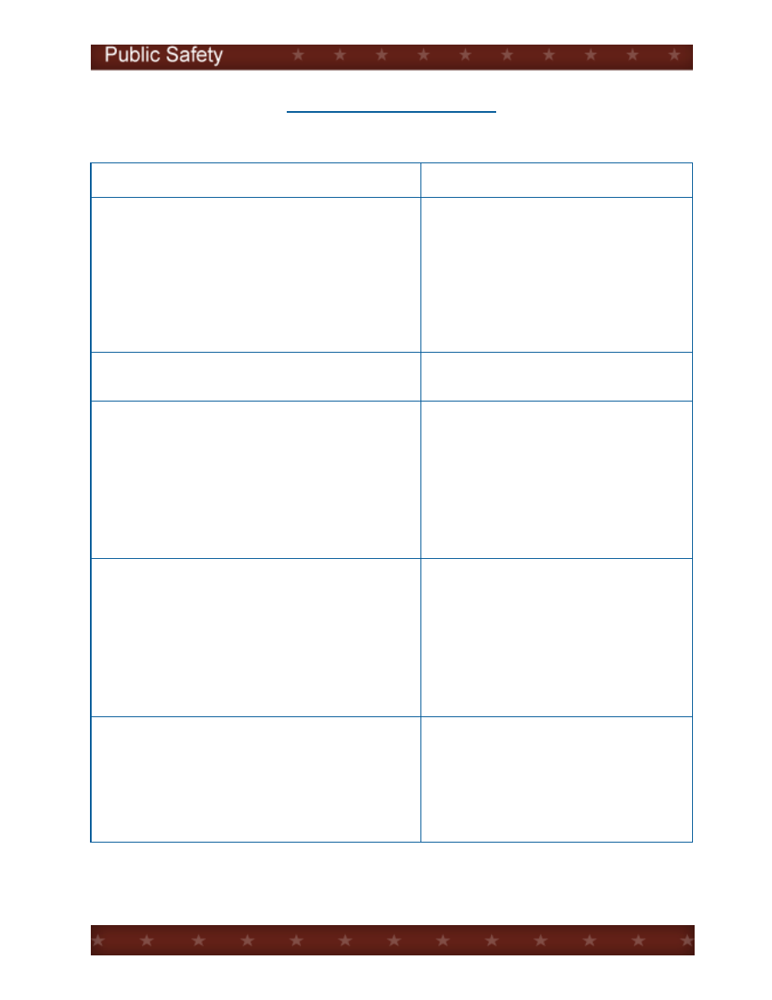
GOAL VI OUTCOMES
KEY OUTCOME MEASURES
Desired Outcomes
D
Observed Results
Observed Results
Part I crimes cleared at a rate exceeding that of the
national average. (Part I crimes are major crimes
such as: murder, rape, robbery, assault, burglary,
larceny, and auto theft.)
Clearance rate for Part I crimes:
Williamsburg: National:
FY 06 – 31.2% 23.4%
FY 07 – 58.5% 22.4%
FY 08 – 45.9% 23.5%
FY 09 – 42.3% 24.9%
FY 10 – 45.2% 26.3%
*Sources: Williamsburg Police Department and
Federal Bureau of Investigations
Police response to calls for service average under 3
minutes, from dispatch to arrival on scene.
Pending response times are being
recalculated due to an error in previous
data collection.
Firefighter and apparatus on scene ready for action
in under 8 minutes in 90% of cases, from dispatch to
arrival.
Fire response time in 90% of cases was
under:
90% under: Avg of all cases:
FY 06 – 7.0 minutes 5.0 minutes
FY 07 – 7.7 minutes 6.0 minutes
FY 08 – 7.3 minutes 5.4 minutes
FY 09 – 6.5 minutes 5.4 minutes
FY 10 – 7.0 minutes 5.1 minutes
*Source: Williamsburg Fire Department
Emergency Medical (EMS) response with Advanced
Life Support (ALS) under 8 minutes in 90% of cases,
from dispatch to arrival
ALS response time in 90% of cases was
under:
90% under: Avg. of all cases:
FY 06 – 7.9 minutes 5.6 minutes
FY 07 – 8.2 minutes 5.8 minutes
FY 08 – 8.2 minutes 5.9 minutes
FY 09 – 7.3 minutes 5.5 minutes
FY 10 – 8.0 minutes 5.2 minutes
*Source: Williamsburg Fire Department
Property loss due to fire of less than .5% of total
protected value annually.
Property loss due to fire was:
FY 06 – $99,970 (.14% loss ratio)
FY 07 – $1,293,420 (.17% loss ratio)
FY 08 – $196,950 (.21% loss ratio)
FY 09 – $892,100 (1.17% loss ratio)
FY 10 – $898,763 (1.47% loss ratio)
*Source: Williamsburg Fire Department
B-25

Citizen Ratings of Goal VI Outcomes
from 2008 and 2010
NATIONAL CITIZEN SURVEY
Percent Rated
Compared to
“Good”
National
or “Excellent”
Benchmark
2008
2010
Measure
Safety in Williamsburg’s downtown area 78%/97%
80%/95% much above
after dark/during the day (p.22)
Safety in your neighborhood after dark/ 77%/95%
84%/96%
much above
during the day (p.22)
Safety from property crimes (p.22)
73%
78%
much above
Safety from violent crimes (p.22)
80%
84%
much above
Police services (p.25)
81%
84%
much above
Fire services (p.25)
94%
96%
much above
EMS services (p.25)
92%
95%
much above
Crime prevention services (p.25)
80%
86%
much above
Fire prevention and education
80%
90%
much above
services (p.25)
Traffic enforcement services (p.25)
64%
69%
above
Emergency preparedness (p.25)
69%
78%
much above
B-26

GOAL VII INITIATIVES
A. School Contract Renewal
Analyze funding and governance formulas relative to enrollment, capital needs, and operational
costs of the joint K-12 education system with James City County, and consider the alternatives to
the joint system, in negotiating an amended five year contract with the County to take effect July 1,
2012.
B. Youth Achievement
Address the needs of at-risk city youth by providing
year-round, individual intervention (e.g. tutoring,
mentoring), as well as group activities (e.g. Summer
Youth Achievement Program, Tae Kwon Do). Work
collaboratively with parents, schools and other
community partners to report out the 2011-2012 Youth
Achievement Program by January 2011.
C. Workforce Development
Use the “Project Employ” grant during the biennium to fund a continuing self-sufficiency team,
which will partner with Workforce Investment Act workers at the Workforce Development Center,
to provide employment assessment, training, and job placement activities for city residents.
D. Homelessness Prevention and Intervention
Address the economic, social, and emotional needs of
individuals and families without reliable housing arrangements
in cooperation with the Peninsula Commission on
Homelessness and the local Historic Triangle Housing,
Employment, and Linkages Project (HELP). Execute a
renewed “Peninsula Commission on Homelessness
Agreement” by the end of 2010.
E. Senior Support Services
Continue to develop a multi-disciplinary team and community
support services that will assist elderly and disabled residents
to age safely at home and have emotional, health, recreational,
social, and other needs met. Issue a report detailing the Senior
Support Program for 2011-2012 by January 2011.
GOAL VII
SEEK OPPORTUNITIES AND IMPLEMENT PROGRAMS THAT ADDRESS THE
EDUCATIONAL, HEALTH, SOCIAL, ECONOMIC AND WORKFORCE TRAINING
NEEDS AND EXPECTATIONS OF CITY RESIDENTS AND WORKERS.
B-27
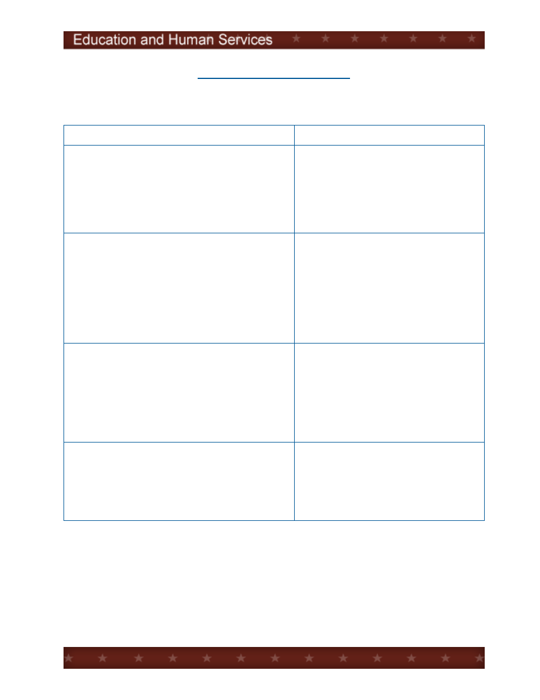
GOAL VII OUTCOMES
KEY OUTCOME MEASURES
Desired Outcomes
Observed Results
On time graduation rate for W/JCC students of 85%.
(Will attempt to obtain data for city students only in
future updates.)
W/JCC school system on-time graduation
rate:
2005-06 – 80%
2006-07 – 78%
2007-08 – 80%
2009-10 - 82%
*Source: W/JCC Schools
3rd grade reading score on the SOL for city students
of 95%, as a key indicator of future academic
success.
3rd grade reading passing rate for the
SOLs at Matthew Whaley Elementary
School:
FY 06 – 81%
FY 07 – 89%
FY 08 – 90%
FY 09 – 94%
FY 10 – 87%
*Source: W/JCC Schools
Exceed statewide success rate of VIEW (VA
Incentive for Employment Not Welfare) program
participants at finding jobs.
% of participants finding employment:
City: State:
FY 06 – 76% 72%
FY 07 – 88% 67%
FY 08 – 79% 58%
FY 09 – 64% 54%
FY 10 – 64% 48%
*Source: Virginia Department of Social Services
Increase the number of city youth that participate in
the city’s youth achievement program.
Number of Youth Achievement Program
Participants:
FY 08 – 23
FY 09 – 36
FY 10 – 61
*Source: City Monthly Operating Reports
B-28

Citizen Ratings of Goal VII Outcomes
from 2008 and 2010
NATIONAL CITIZEN SURVEY
Percent Rated Compared to
“Good”
National
or “Excellent”
Benchmark
2008 2010
Measure
Educational opportunities (p.33)
78%
85%
much above
Public Schools (p.34)
67%
78%
much above
Availability of affordable quality
50%
55%
above
health care(p.35)
Availability of preventive health services
52%
60%
above
(p.35)
Health and wellness services (p.36) 65%
73%
much above
Availability of affordable quality child care 25% 35%
similar
(p.32)
Services to seniors (p.33)
75%
79%
much above
Services to youth (p.33)
50%
55% similar
Services to low-income people (p.33) 37%
42% below
B-29

GOAL VIII
ADD TO THE QUALITY AND AVAILABILITY OF RECREATIONAL AND
CULTURAL FACILITIES AND PROGRAMMING, AS MIGHT BE TYPICALLY
AVAILABLE ONLY IN LARGER COMMUNITIES, TO MEET THE NEEDS AND
EXPECTATIONS OF CITY RESIDENTS AND VISITORS.
GOAL VIII INITIATIVES
A. Save Country Road West
Collaborate with Colonial Williamsburg and James City County to retain the portion of the Country
Road between the Mounts Bay County Government Complex in Kingsmill and South England
Street near the Williamsburg Lodge as a hiking and biking trail under City and County ownership,
and complete all necessary agreements in 2011.
B. Civil War Sesquicentennial
Provide leadership and support for the Civil War
Sesquicentennial in the Historic Triangle through 2015 per
City Council Resolution #09-05. Construct a foot path
between Redoubts One and Two and provide additional
signage in Redoubt Park, for the 150
th
anniversary of the
Battle of Williamsburg, in 2012.
C. Waller Mill Park
Replace the existing permanent and floating docks with a
more functional floating dock; include a new canoe and kayak
launching facility and a storage area by March 2012.
Explore adding new self-supporting programs in 2011 and
2012 at the park, such as disc golf, moonlight fishing and
children’s camps; to enhance enjoyment at the park.
D. Kiwanis Park
Work in partnership with the Kiwanis Club to construct a shelter located where the walkways meet
in the center of the softball field complex, and develop the infield portion of the fourth league play
softball field for practice/warm up in anticipation of future completion of the four field complex,
during the biennium.
E. Quarterpath Park and Recreation Center
Replace the existing lighting on softball fields #1 and #2 with
more energy efficient lighting; add energy efficient lighting to
the sand volleyball courts, by March 2012. In conjunction
with these improvements, the existing lights for ballfield #3
will be retrofitted with computer controls.
Replace the original fencing on softball field #1, and increase
the size of the field to make it more usable for all league and
tournament play, by March 2012.
B-30

F. Neighborhood Parks
Complete improvements to Geddy Park by spring 2011,
including bench installation and site cleanup, incorporating
the park into Parks and Recreation’s park maintenance
schedule.
Complete landscaping improvements to Bicentennial Park
by spring 2011.
Provide additional playground facilities in the Merrimac
Trail area in cooperation with apartment complexes and
residents.
G. Friends of the Parks
Develop goals and structure for a city “Friends of the
Park” program to coordinate volunteer help for park
maintenance; implement by the end of the biennium.
H. Festivals and Sports Marketing Opportunities
Support expansion of various special event
opportunities (e.g. arts festivals, sports tournaments,
spring garden tours, William and Mary athletics and
events, Christmas season events, Civil War
Sesquentennial) in order to add both cultural
enrichment for residents and tourism product.
I. City Historic Items Curation
Appoint by the end of the biennium a city curation work group of citizen volunteers and city staff to
research and inventory city historical items.
J. Poet Laureate Designation
Designate a “Williamsburg Poet Laureate” for multi-year terms to encourage poetry reading and
writing in the greater Williamsburg community.
K. National Recreation and Parks Accreditation
Start the process for submission of the “Notice of Intent to Pursue Accreditation” to Commission
for Accreditation of Park and Recreation Agencies (CAPRA); strive to complete the process by the
end of the biennium.
L. Williamsburg Visual Arts Center
Execute an option to lease with This Century Art Gallery to build a regional visual arts center at
Papermill Creek during the biennium, if This Century Gallery is successful in its capital campaign
for the project.
B-31
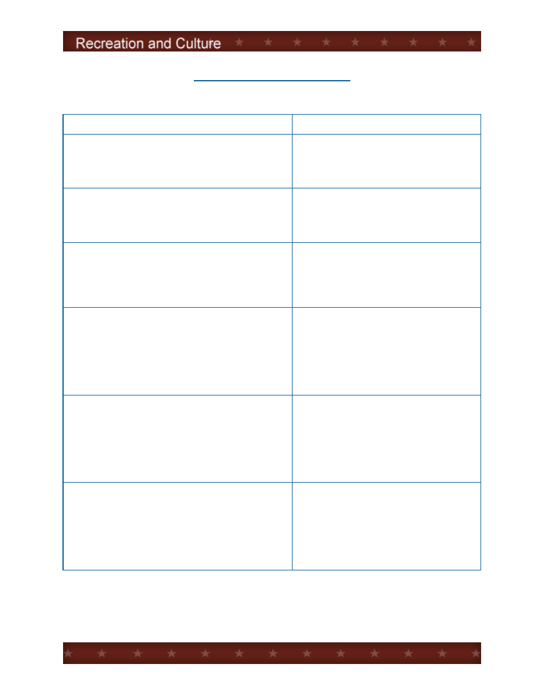
GOAL VIII OUTCOMES
KEY OUTCOME MEASURES
Desired Outcomes
Observed Results
Active and passive city parks exceed state DCR
standard of 10 acres per 1000 population by 150%.
As of FY 10, there are 208 acres of
improved active and passive park land in
the City (15.7 acres/1,000 population).
*Source: City Planning Department
Continue supporting softball and volleyball sporting
tournament opportunities at City facilities.
Tournaments: Participants:
FY 09 – 13 4,318
FY 10 – 17 7,823
*Source: City P&R Department
Increase daily attendance at the Quarterpath
Recreation Center.
Avg. daily attendance at the recreation
center:
FY 09 – 182
FY 10 – 214
*Source: ICMA Performance Measures
An active library card held by one half of the city’s
population (including William and Mary students).
Number of library cards issued to
Williamsburg residents:
Number % of population
FY 08 6,399 48%*
FY 09 6,687 50%*
FY 10 7,081 53%
*Source: Williamsburg Regional Library
Williamsburg Farmers’ Market annual vendor sales
at least $750,000.
Total vendor sales per season:
2005 – $556,342 ($13 per customer)
2006 – $656,086 ($18 per customer)
2007 – $757,362 ($18 per customer)
2008 – $701,156 ($20 per customer)
2009 – $817,357 ($21 per customer)
*Source: Farmers Market
To increase attendance at the Virginia Arts Festival’s
annual “Festival Williamsburg” event each year.
Attendance at the annual event was:
2006 – 3,857 plus 269 students
2007 – 3,367 plus 275 students
2008 – 3,335 plus 2,090 students
2009 – 2,694 plus 2,118 students
2010 – 3,180 plus 931 students
* Source: Virginia Arts Festival
B-32
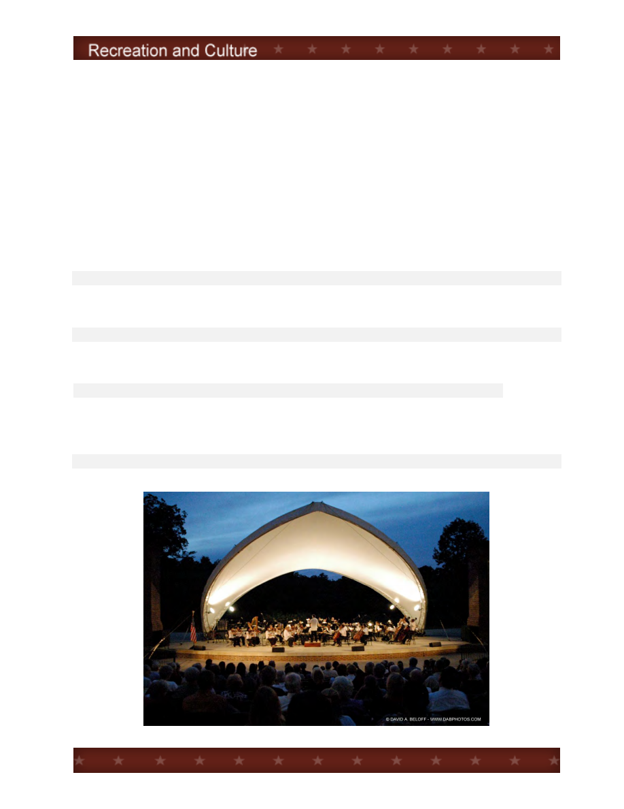
Citizen Ratings of Goal VIII Outcomes
from 2008 and 2010
NATIONAL CITIZEN SURVEY
Percent Rated
Compared to
“Good”
National
or “Excellent”
Benchmark
2008 2010
Measure
Recreational opportunities (p.31)
73% 73%
much above
City Parks (p.32)
87% 91%
much above
Recreation programs and classes (p.32)
74% 87%
much above
Recreation centers and facilities (p.32)
74% 86%
much above
Public library services (p.34)
91% 94%
much above
Opportunities to attend cultural activities
63% 72%
much above
(p.33)
Availability of paths and walking trails (p.9) 54%
62%
above
B-33
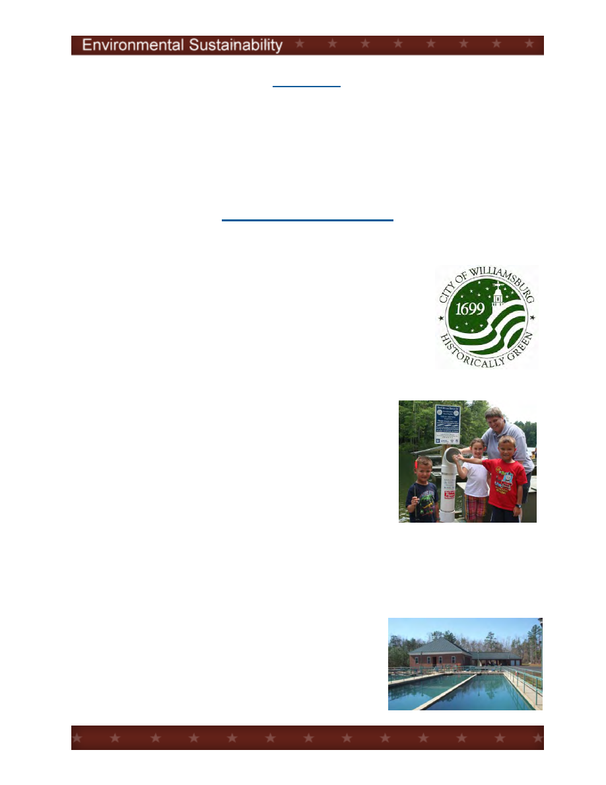
GOAL IX INITIATIVES
A. Stormwater Management and Treatment
Implement requirements of the State stormwater permit in 2011 and
2012. Complete an annual report outlining activities accomplished in
the past year by October each year.
B. VML Platinum Certification
Receive Platinum Certification from Virginia Municipal League (VML)
in 2010 and 2011 for the city’s green programs, services and effort.
C. Green Challenges and Programs
Implement business and residential “green challenge” programs, as part of the VML certification
process, to encourage residents and businesses to implement green services and practices.
Apply for E4 (Extraordinary Environmental Enterprise)
recertification for the Public Works and Utilities Complex with
Virginia Department of Environmental Quality and implement
an environmental management team review process for city
departments during the biennium.
Install 50 more blue crab medallions, an initiative started by HR
Storm and VA DEQ, throughout the city to continue to educate
the community about public stormwater pollution.
Conduct a drug collection program in the city to prevent potentially dangerous controlled
substances from being disposed of in the city’s water system in 2011.
Investigate possible tools for assisting the city in tracking and measuring its carbon footprint and
use identified tools to measure the city’s progress during the biennium.
D. Water Conservation Promotion
Promote water conservation through various community,
outreaches – HRWET (Regional) participation, Farmers
Market, handouts at office and civic events such as Earth Day.
E. Drinking Water Safety
Design and install a new chemical feed system at the Water
Plant meeting Virginia Department of Health water quality
regulations by the end of 2011.
GOAL IX
BUILD AN EVERMORE SUSTAINABLE AND HEALTHY CITY
PURSUING MULTIPLE STRATEGIES FOR CONSERVATION AND
RESTORATION, AND PROVIDING ESSENTIAL ENVIRONMENTAL
SERVICES RELATED TO DRINKING WATER, WASTE WATER,
STORMWATER AND SOLID WASTE.
B-34

F. Southeast Water Tank
Negotiate and execute the comprehensive PPEA agreement with CBI to build the water tank in
advance of the Riverside Hospital Project, and complete construction of the water tank by the end
of 2011.
G. Sewer System Overflow Prevention
Meet all submittal deadlines and continue sewer system
assessment and upgrades as required by the Consent Order
with DEQ/EPA.
H. Voluntary Residential Refuse Collection
Expand, on a voluntary basis, the curbside refuse collection
option to another neighborhood(s).
I. Municipal Building LEED Certification
Receive LEED certification for the Municipal Building addition project upon its completion.
J. Green Technology and Architectural Standards
Evaluate and make changes to architectural standards to allow more flexibility in green building
design, e.g. solar panels and green roofs.
K. Cypress Creek Power Plant
Implement Cypress Creek Power Plant Review Process, as approved by City Council at the August
2010 meeting.
B-35
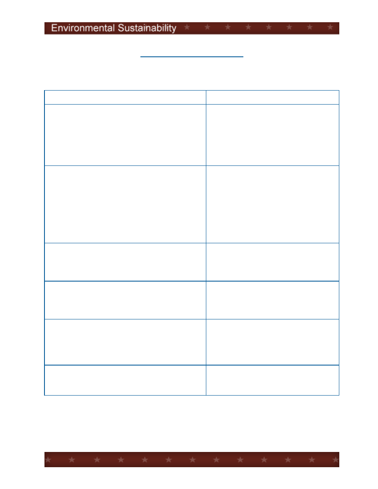
GOAL IX OUTCOMES
KEY OUTCOME MEASURES
Desired Outcomes
Observed Results
Recycle 37.5% of solid waste stream (150% of
Virginia’s 25% recycling goal).
Waste stream recycled:
2005 – 33% (132% of state goal)
2006 – 38% (152% of state goal)
2007 – 35% (140% of state goal)
2008 – 36% (144% of state goal)
2009 – 22% (88% of state goal)*
*Source: City Public Works & Utilities Dept.
Drinking water conserved by reducing daily
household equivalent consumption below 165 gallon
per day.
Water consumed in gallons per day per
equivalent household connections:
FY 05 – 175 GPD
FY 06 – 165 GPD
FY 07 – 164 GPD
FY 08 – 173 GPD
FY 09 – 172 GPD
FY 10 – 155 GPD
*Source: City Public Works & Utilities Dept.
DNR Certification of Compliance obtained with the
Chesapeake Bay Protection Act.
In the most recent compliance review
(2005) the city was named an “outstanding
local partner” in Chesbay protection.
*Source: Chesapeake Bay Local Assistance Dept.
DNR Certification of Compliance obtained with VA
Erosion and Sediment Control Law (70 of 100 points
needed for certification).
In the most recent Compliance Review
(2007) the city scored an average of 93.75
in four program areas earning
certification.
*Source: Dept. of Conservation and Recreation
Increase residential recycling set-out rate annually
Set-out rate:
FY 08 – 40%
FY 09 – 44%
FY 10 – 42%
*Source: City Monthly Operating Report
Increase participation in the City’s Green Business
and Residential Challenges each year.
Businesses: Households:
FY 11 – 17
*Source: City Green Team
B-36
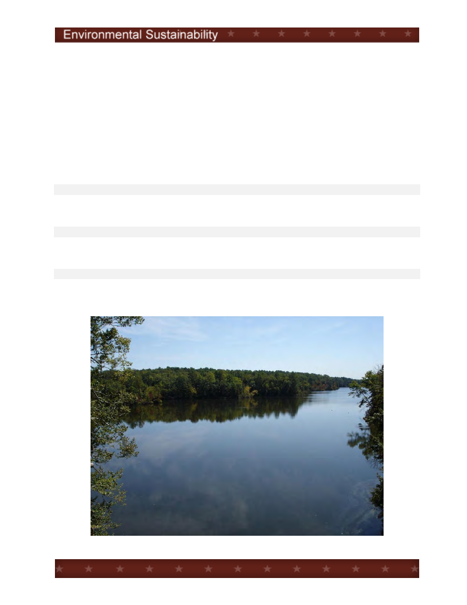
Citizen Ratings of Goal IX Outcomes
from 2008 and 2010
NATIONAL CITIZEN SURVEY
Percent Rated Compared to
“Good”
National
or “Excellent”
Benchmark
2008 2010
Measure
Sewer services (p.30)
86% 82% much above
Drinking water (p.30)
64% 73%
above
Storm drainage (p.30)
67% 70%
much above
Yard waste pick-up (p.30)
80% 76%
much above
Recycling (p.29)
74% 81%
similar
Garbage collection (p.25)
91% 79%
similar
B-37
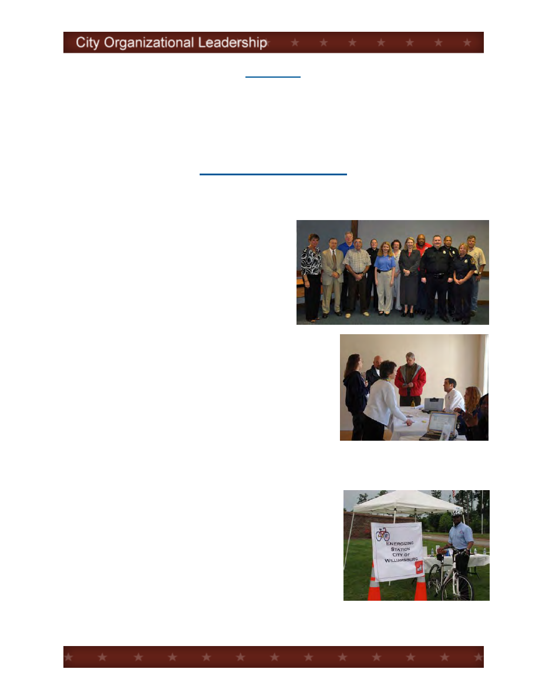
GOAL X INITIATIVES
A. Budget Reset - The New Normal
Make revenue choices and spending priorities in
the Fiscal Year 2012 and 2013 city operating
budgets which will be financially sustainable and
fiscally sound in the post-recessionary
environment, while still accomplishing the city’s
ambitious goals, and reflecting the priorities of
the community. End fiscal years 2011 and 2012
with an annual operating surplus in excess of $1
million.
B. Leadership Philosophy of Full Engagement
Engender a workplace culture where all employees take
increasing ownership for the effectiveness of city
government and outcomes in the community. Hold a third
High Performance Organization week long class.
Emphasize a leadership philosophy of enabling and
energizing all city staff, led by the department head level
“Strategic Planning Team,” over the biennium.
C. Performance Measurement System Development
Expand the use of automated performance data “dashboards” throughout the city organization.
Communicate performance and outcome information, including continuously updated “live”
dashboards, to the citizenry and to City Council. Retain ICMA Center for Performance
Management “Certificate of Distinction.”
D. Geographic Information System Advances
Build the GIS database for the utility operations, using GIS
data to better analyze patterns of water consumption and
sanitary overflow. Convert the Zoning Maps to fully
integrate with GIS. Upgrade system to the latest version of
the software, and build up the public facing GIS website.
E. Employee Wellness and Medical Cost Containment
Develop and implement a coordinated, city wide wellness
program by June 2011, to encourage health and wellness of employees and their dependents.
Employ both education and health insurance related incentives for the program, including the areas
of nutrition, physical fitness, and lifestyles choices.
GOAL X
CONTINUOUSLY IMPROVE THE PERFORMANCE OF THE CITY
GOVERNMENT ORGANIZATION FOR GREATER FISCAL STRENGTH
AND EFFECTIVENESS IN OUTCOMES.
B-38
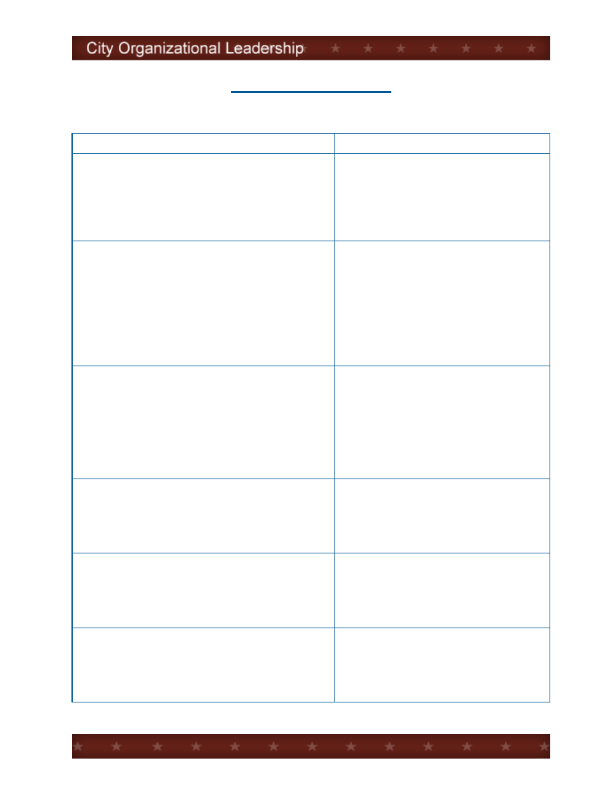
GOAL X OUTCOMES
KEY OUTCOME MEASURES
Desired Outcomes
Observed Results
Excellence in Financial Reporting and Budget
Presentation as indicated by obtaining Government
Finance Officers Association (GFOA) annual
professional awards.
During 2010 the City received the 24th
consecutive Certificate of Achievement for
Financial Reporting and the Distinguished
Budget Presentation Award for the18th
consecutive year.
*Source: City Finance Department
Exceed budget expectations by having operating
revenues exceed operating expenditures each year.
Annual operating revenues exceeding
expenditures:
FY 05 – $1.2 mil
FY 06 – $1.6 mil
FY 07 – $2.7 mil
FY 08 – $3.3 mil
FY 09 – $.23 mil
FY 10 – $1.8 mil
*Source: City Finance Department
Maintain sound fiscal health by exceeding city’s 35%
operating reserve policy.
% undesignated fund balance:
FY 05 – 66.3%
FY 06 – 60.0%
FY 07 – 72.9%
FY 08 – 72.7%
FY 09 – 66.5%
FY 10 – 59.2%
*Source: City Finance Department
Maintain annual Employee Turnover Rate of 10% or
less of the permanent workforce.
Annual Turnover Rate:
FY 08 – 9.5%
FY 09 – 8.0%
FY 10 – 6.8%
*Source: Human Resources
Reduce Employee Sick Leave used per total hours
worked to 2% or less.
Annual sick leave used:
FY 08 – 3.1%
FY 09 – 2.6%
FY 10 – 3.3%
*Source: Human Resources
Reduce number of Auto and General Liability claims
paid annually to 10 or less.
Auto and General Liability Claims paid:
FY 08 – 18
FY 09 – 9
FY 10 – 18
*Source: Finance Department
B-39
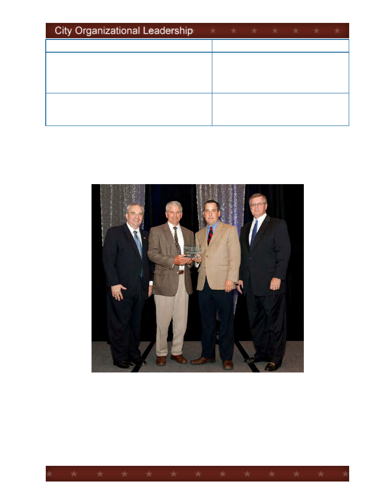
Desired Outcomes
Observed Results
Reduce annual increase in employee health insurance
claims paid to less than 5%.
Health claims paid:
FY 08 – $1,301,672 6.1%
FY 09 – $1,608,999 23.6%
FY 10 – $1,731,882 7.6%
*Source: Human Resources
Employee training accomplished as a percent of all
employees: QUEST Employee Orientation (100%),
SELF Supervisory training (25%), and High
Performance Organization training (80%).
As of FY 10, the following percent of all
employees attended QUEST (97%), SELF
(31%), and HPO (37%).
*Source: City Human Resources Office
B-40
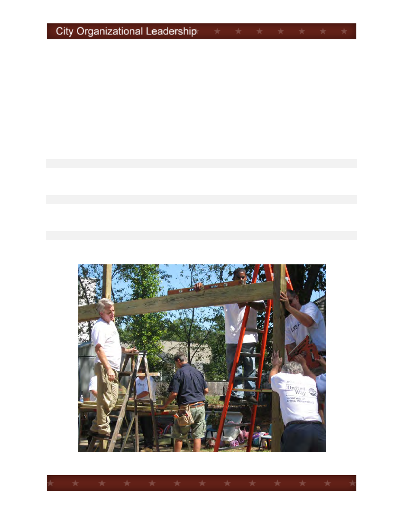
Citizen Ratings of Goal X Outcomes
from 2008 and 2010
NATIONAL CITIZEN SURVEY
Percent Rated Compared to
“Good”
National
or “Excellent”
Benchmark
2008 2010
Measure
Knowledge of city employees (p.49)
90% 83%
much above
Responsiveness of city employees (p.49) 91% 77%
much above
Courtesy of city employees (p.49)
91% 85%
much above
Overall impression of city employees (p.49) 91% 79%
much above
Services provided by city (p.47)
75% 82%
much above
B-41

CITY OF WILLIAMSBURG GOALS & INITIATIVES - FISCAL YEAR 2012
FY
2012 C
a
pital P
roject
C
o
mmunity Engagement
C
har
acter
of the C
ity
Economic Vitality
N
e
ighbor
hooods and
H
ousing
Tr
anspor
tation
Public Safety
Education and H
uman
S
e
rv
ices
R
ecr
eation and C
ultur
e
E
n
vir
onmental
Sustainability
C
ity O
rganiz
a
tional
Leader
ship
I. Community Engagement
Comprehensive Plan Update & Interjurisdictional Coordination
x
Citizen Communications Strategic Plan
x
City/College (Town/Gown) Relations
x
Stryker Center - City/Library Partnership
x
Communications Franchises
x
Voters Rights Pre-Clearance
x
City Council Meeting Time of Day
x
II. Character of the City
Vision for Monticello/Lafayette/Richmond Road Area
x
Vision for Northeast Triangle of City
x
Future Community in Southeast Quadrant
x
Targeted Redevelopment Opportunities
x
Corridor Beautification
x
Open Space Preservation
x
Historic Building Survey
x
III. Economic Vitality
Economic Development Strategic Plan Update
x
EDA Programs
x
Economic Diversification Strategies
x
Tourism Marketing
x
Business Assistance and Recruitment
x
Business Recycling
x
New Retail Guide Deployment
x
Arts and Creative Economy District
x
Downtown Vibrancy
x
IV. Neighborhoods and Housing
Neighborhood Relations and Preservation near College
x
Merrimac Trail Neighborhoods
x
Blayton Elderly Housing Expansion
x
Incentives for Workforce Housing
x
Residential Electrical Reliability
x
City/Housing Authority Partnership
x
x
= Primary Category
= Secondary Category
Matrix of Primary and Secondary Goal Categories
B-42

CITY OF WILLIAMSBURG GOALS & INITIATIVES - FISCAL YEAR 2012
FY
2012 C
a
pital P
roject
C
o
mmunity Engagement
C
har
acter
of the C
ity
Economic Vitality
N
e
ighbor
hooods and
H
ousing
Tr
anspor
tation
Public Safety
Education and H
uman
S
e
rv
ices
R
ecr
eation and C
ultur
e
E
n
vir
onmental
Sustainability
C
ity O
rganiz
a
tional
Leader
ship
x
= Primary Category
= Secondary Category
Matrix of Primary and Secondary Goal Categories
V. Transportation
Ironbound Road Widening
x
Quarterpath at Williamsburg Improvements
x
Traffic Safety Enhancements
x
Pedestrian Connection Improvements
x
Bike Friendly Community Designation
x
Passenger Rail Enhancement
x
Williamsburg Area Transport
x
Vision for Transportation Center Expansion
x
VI. Public Safety
Storm Ready Community Re-Designation
x
Quarterpath Emergency Shelter Operations
x
Merrimac Trail Neighborhoods Community Policing
x
Public Safety Physical Fitness
x
Police Emergency Medical Response
x
Fire Equipment Replacement
x
Fire Station Renovations
x
Emergency Operations Center
x
VII. Education and Human Services
School Contract Renewal
x
Youth Achievement
x
Workforce Development
x
Homelessness Prevention and Intervention
x
Senior Support Services
x
B-43

CITY OF WILLIAMSBURG GOALS & INITIATIVES - FISCAL YEAR 2012
FY
2012 C
a
pital P
roject
C
o
mmunity Engagement
C
har
acter
of the C
ity
Economic Vitality
N
e
ighbor
hooods and
H
ousing
Tr
anspor
tation
Public Safety
Education and H
uman
S
e
rv
ices
R
ecr
eation and C
ultur
e
E
n
vir
onmental
Sustainability
C
ity O
rganiz
a
tional
Leader
ship
x
= Primary Category
= Secondary Category
Matrix of Primary and Secondary Goal Categories
VIII. Recreation and Culture
Save Country Road West
x
Civil War Sesquicentennial
x
Waller Mill Park
x
Kiwanis Park
x
Quarterpath Park and Recreation Center
x
Neighborhood Parks
x
Friends of the Parks
x
Festivals and Sports Marketing Opportunities
x
City Historic Items Curation
x
Poet Laureate Designation
x
National Recreation and Parks Accreditation
x
Williamsburg Visual Arts Center
x
IX. Environmental Sustainability
Stormwater Management and Treatment
x
VML Platinum Certification
x
Green Challenges and Programs
x
Water Conservation Promotion
x
Drinking Water Safety
x
Southeast Water Tank
x
Sewer System Overflow Prevention
x
Voluntary Residential Refuse Collection
x
Municipal Building LEED Certification
x
Green Technology and Architectural Standards
x
Cypress Creek Power Plant
x
X. City Organizational Leadership
Budget Reset - The New Normal
x
Leadership Philosophy of Full Engagement
x
Performance Measurement System Development
x
Geographic Information System Advances
x
Employee Wellness and Medical Cost Containment
x
B-44
Document Outline